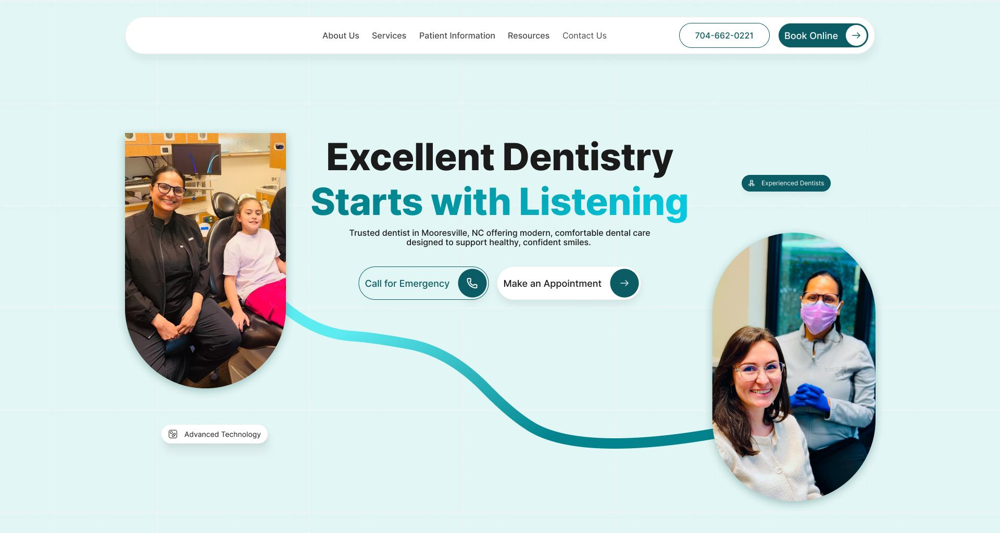
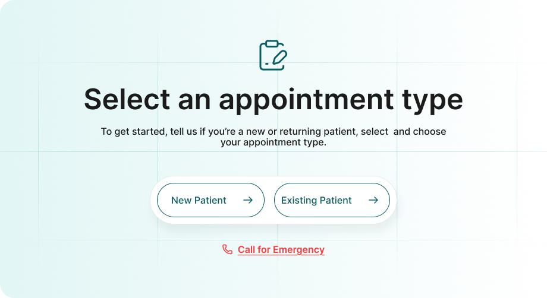
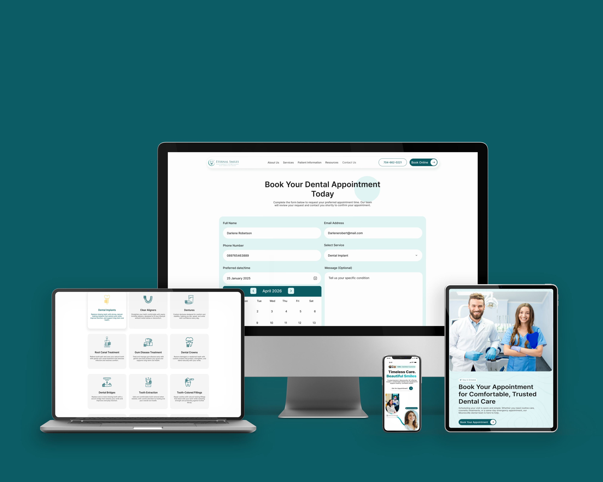
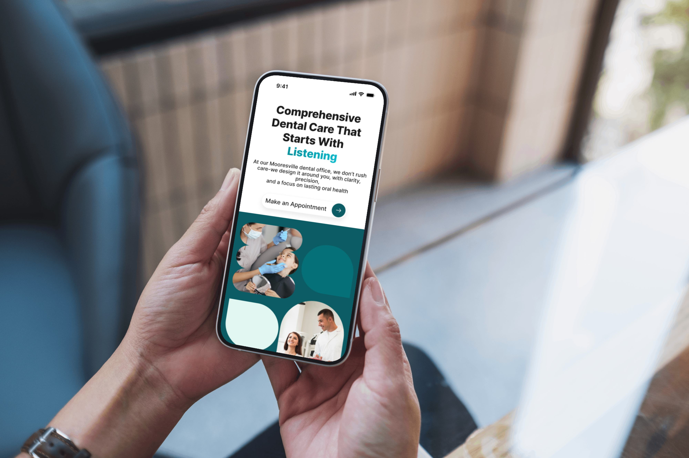

End-to-end product design from research and wireframes through high-fidelity prototypes. All client names protected under NDA.
Transforming a trusted local clinic into a modern, trust-driven digital experience that increases appointment bookings.
"Redesign a modern website that reflects professionalism, improves user experience, and increases appointment bookings."


The final design transforms the experience into a clean, calming, and trust-focused digital journey. It balances professional credibility, emotional warmth and ease of use.

Patients can now find and book appointments faster through clear, visible CTAs
Reduced basic inquiry calls by making services, location, and contact information easier to access
Built stronger trust with new patients through real testimonials, doctor presence, and credibility-focused sections
Helped users make quicker booking decisions by answering key concerns directly on the page
Improved service discovery, allowing patients to understand treatments available
Created a smoother mobile booking journey for busy patients searching on the go
"Healthcare websites need to feel clear, calm, and trustworthy before they feel creative. Small UX decisions CTA placement, content hierarchy, and patient-focused messaging can make a dental website feel more approachable and easier to act on."

A comprehensive hotel management mobile application designed to streamline operations, staff coordination, and guest experience management.
Full case study content and screens will be added shortly.
Luxury aesthetic clinic website redesign crafted to reflect premium positioning, encourage service bookings, and elevate the brand's digital presence.
Full case study content and screens will be added shortly.
Empathetic, calming website redesign for a mental health practice focused on accessibility, reducing stigma, and creating a safe digital environment.
Full case study content and screens will be added shortly.